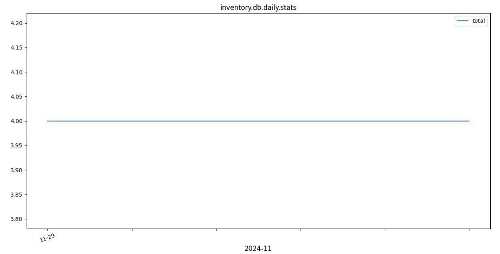
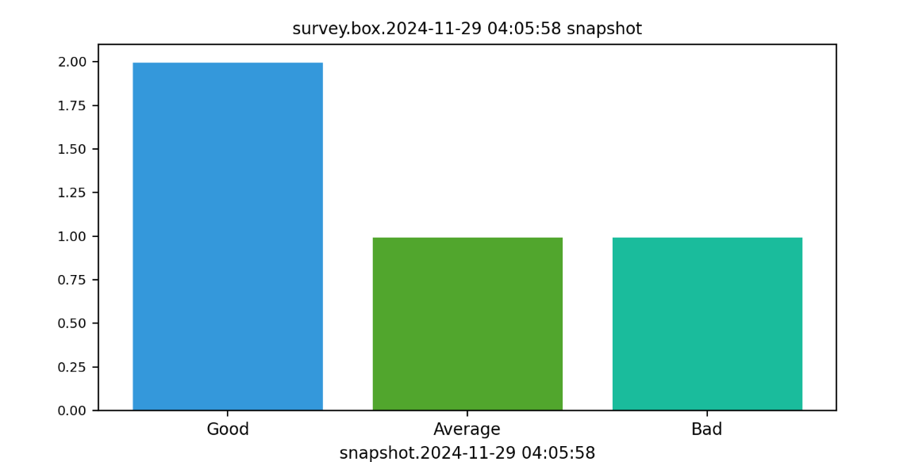
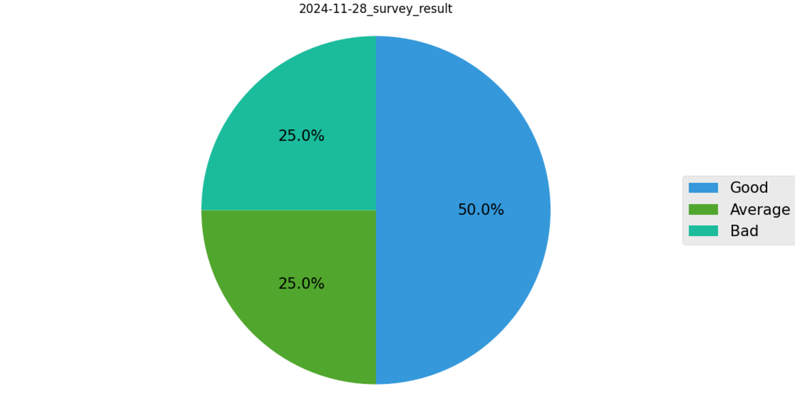
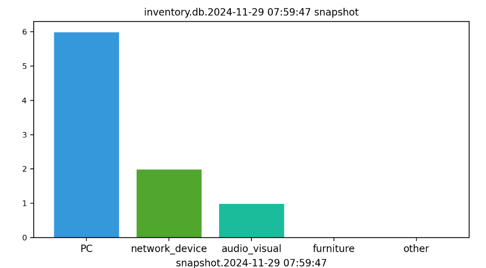

pyshell
pyshell is dedicated shell for python integration. it can call python librarise {matplotlib, numpy, pandas} for analyzing data and generating png graph.
Setup Env @ubuntu
install library for compiling python3
sudo apt update
sudo apt install build-essential libbz2-dev libdb-dev \
libreadline-dev libffi-dev libgdbm-dev liblzma-dev \
libncursesw5-dev libsqlite3-dev libssl-dev \
zlib1g-dev uuid-dev tk-dev
install python 3.9
# Download
cd $HOME
wget https://www.python.org/ftp/python/3.9.4/Python-3.9.4.tar.xz
tar xJf Python-3.9.4.tar.xz
# Compiling
cd Python-3.9.4
./configure
make
# install
sudo make install
ls /usr/local/lib/python3.9
ls /usr/local/bin/pip3.9
install python libraries
# please ignore just WARNINGS
sudo /usr/local/bin/pip3.9 install numpy
sudo /usr/local/bin/pip3.9 install pandas
sudo /usr/local/bin/pip3.9 install matplotlib
# mkdir for matplotlib
sudo mkdir -p /home/small-shell/.config/matplotlib
sudo mkdir -p /home/small-shell/.cache/matplotlib
chown -R small-shell:small-shell /home/small-shell
Define python path at env
sudo vi /usr/local/small-shell/util/pyshell/env
--code--
PYTHON="/usr/local/bin/python3.9"
--------
Make statistics job
sudo /usr/local/small-shell/adm/gen -job
It' required to complete OS setup and setup of small-shell Base APP, see detail at Quickstart. Following is an expamle that count up number of data of item.db
dialog result
sudo /usr/local/small-shell/adm/gen -job
job name: countup_item
Type of job (1.job automation | 2.file exchange) : 1
--Define schedule--
Month [ any | 1-12 ]: any
Date [ any | 1-31 ]: any
Hour [ any | 0-23 ]: 0
Min [ any | 0-59 ]: 1
Week [ any | mon - sun ]: any
Exec command or batch script: countup.sh databox:item.db type:line frequency:daily
# enable job
sudo -u small-shell /usr/local/small-shell/bin/e-cron enable.countup_item
# execute manually, please execute several time because line graph needs at least 2 teims execution.
sudo -u small-shell /usr/local/small-shell/bin/e-cron exec.countup_item
countup_item successfully completed
# re-execute manually. because line graph need to have at least 2 line.
sudo -u small-shell /usr/local/small-shell/bin/e-cron exec.countup_item
countup_item successfully completed
View statistics
You can view statistics on console of Base APP. pyshell could make graph using pandas and matplotlib librarise. please exec #stas at console, then you can access to graph.
Pop up graph is here. 
Utilscripts
You can use script for statistics on util/scripts dir
ls /usr/local/small-shell/util/scripts
Note
utilscripts should be executed small-shell priviledge.
e.g.) sudo -u small-shell /usr/local/small-shell/util/scripts/$utilscript param1:$param1 param2:$param2
List of utilscripts
| script | description |
|---|---|
| countup.sh | countup number of data, if you don't set filter words, it will count lines of databox. if you set filter word, it will count number of data per filter. in that case, filter word will be label of graph |
| sumup.sh | sumup specific column data, if you set filters , it will sumup data of filtered array of column data. in that case, filter word will be label of graph |
Parameters for util scirpts
| param | description | allowed param | useage |
|---|---|---|---|
| databox | target databox | any | databox:$databox |
| title | title of graph (optional) | any | title:$title |
| X_lalbel | label of X line (optional) | any | X_label:$X_label |
| Y_lalbel | label of Y line (optional) | any | Y_label:$Y_label |
| type | graph type, deault is line | line bar pie | type:$type |
| frequency | frequency of data gathering batch, it will adjust titles and xticks formats adequately. default will be daily | monthly daily hourly snapshot | frequency:$frequency |
| filters | words for countup or sumup in databox, these words will be labels of graph | any | filters:word1,word2 |
| key | key name of the column which is filtering target of countup | any | key:$key |
| sumup_key | key name of the column which will be sumuped | any | sumup_key:$key |
| filter_key | key name of the column which sumup, if the dataset contain the word in the column, it will be targetted | any | filter_key:$key |
| glogal_filter | filtering data from pipeline from databox, but it will not be label | any | global_filter:word,$n |
| diff | calc difference from last statistics number, default is "no" | any | diff:no or diff:yes |
Note
If you want to put space in the title, please use {####}. it's changed to space internally in th pyshell.
Usage
please set following commands as exec_command in "#sudo gen -job" dialog.
or you can execute the script manually. then you can confirm result on console box of Standard APP.
Countup
e.g.) just countup survey result that is stored at suvery.box
sudo -u small-shell /usr/local/small-shell/util/scripts/countup.sh databox:survey.box type:bar frequency:daily
Target Databox for analytics
Countup with filtering
e.g.) countup survey result which have "Good" or "Average" or "Bad" as feedback in impression key column.
sudo -u small-shell /usr/local/small-shell/util/scripts/countup.sh databox:survey.box key:impression filters:Good,Average,Bad \
type:bar frequency:snapshot

sudo -u small-shell /usr/local/small-shell/util/scripts/countup.sh databox:survey.box \
key:impression filters:Good,Average,Bad type:pie title:2021-05-11_survey_result frequency:snapshot

Sumup Scenario
Create monthly graph of inventory.db by sumup each type of inventory
Target Databox for analytics]
inventory.db {item_name:text, type:select, num:num, note:text}
Sumup with filtering
sudo -u small-shell /usr/local/small-shell/util/scripts/sumup.sh databox:inventory.db type:bar filter_key:type filter:PC,network_device,audio_visual,furniture,other sumup_key:num frequency:snapshot

Delete rawdata and graph
cd /usr/local/small-shell/util/statistics
cd rawdata or cd graph
sudo rm $target
BI tool integration
You can export rawdata of statistics to BI tool. If graph must be complex one, we would like to recommend to use BI tool.
rawdata of statistics
You can check, export or delete rawdata on small-shell server.
ls /usr/local/small-shell/util/statistics/rawdata
rawdata format
Please transfer tehse rawdatas to BI tool.
Time,item1,item2
2021-01-01 01:00:00,1,2
2021-01-01 02:00:00,1,2
pyshell
Pyshell is a intermediate generation tool for python programs. it will generate python program which contain Pandas , matplotlib and numpy. You can generate graph through pygraph.sh
ls /usr/local/small-shell/util/pyshell/pygraph.sh
#--------------------------------------------------------------
# usage: pygraph.sh type:$type input:$input output:$output \
# title:$title X_label:$X_label Y_label:$Y_label
#--------------------------------------------------------------
# graph types
#--------------------------------------------------------------
# type:bar,hourly
# type:bar,daily
# type:bar,monthly
# type:line,hourly
# type:line,daily
# type:line,monthly
# type:pie,snapshot{yyyy-mm-dd HH:MM}
# type:bar,snapshot{yyyy-mm-dd HH:MM}
#--------------------------------------------------------------
pyshell libraries
Pyshell could generate python programs using core libraries.
/usr/local/small-shell/util/pyshell/lib
Input for pyshell
Input data must be csv and column 1 must be "Time", countup.sh or sumup.sh could generate statistic data in this standard format, then pass to pyshell for generating matplotlib graph.
sample data format
Time,label1,label2
2021-01-01 01:00:00,1,2
2021-01-01 02:00:00,1,2
Change fonts-family
If your charactor is not shown correctly in graph, please install favorit fonts and reflect to pyshell.
install
Install IPAexGothic as an example.
sudo apt install fonts-ipaexfont
change fonts
sudo vi /usr/local/small-shell/util/pyshell/env
--code--
font_family="IPAexGothic" #modify
--------
remove cache
Please remove your cache, then please execute graph job again.
sudo -u small-shell rm /home/small-shell/.cache/matplotlib/fontlist-v330.json
pyshell verificated env
OS: Utuntu 20 (recommnded), CentOS 7, RHEL 8
bash: 4.X
python: 3.8, 3.9
required: matplotlib(3.X), pandas(1.X), numpy(1.X)